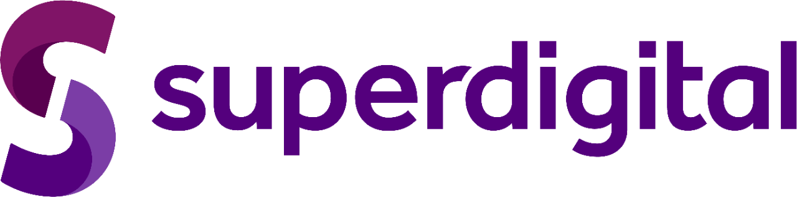
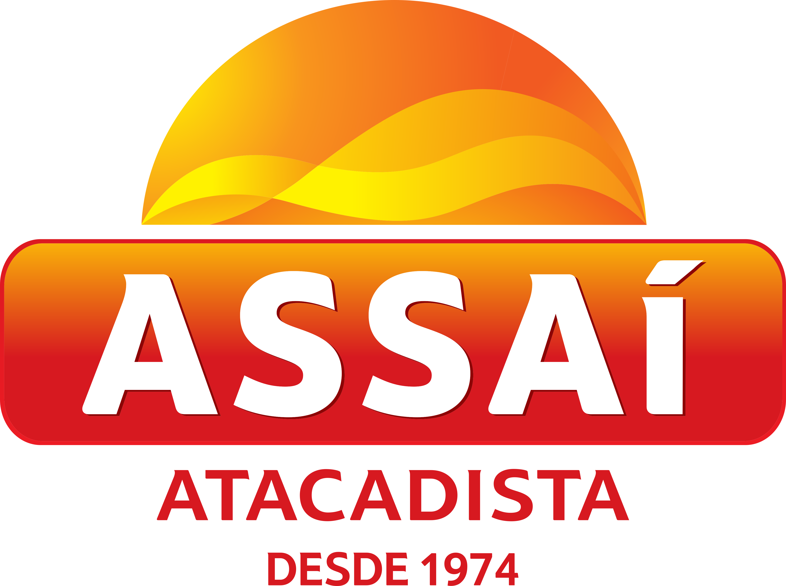

Ferramentas
Soluções para automatizar análises e relatórios de performance, comparar resultados e manter o histórico acessível.
Ferramentas + consultoria especializada
Performance, Capacidade & Rightsizing e FinOps com análise especializada, acompanhamento contínuo e desenvolvimento de soluções apoiados por Inteligência Artificial.
O ciclo de Eficiência
Engenharia de
Eficiência
Inteligência Artificialem todo o ciclo
Testes e análise para entender limites, validar o comportamento e identificar gargalos.
Demanda, utilização e rightsizing para adequar os recursos ao uso real e preparar o crescimento.
Custos, consumo e prioridades para dar visibilidade aos gastos e orientar decisões de eficiência.
Testes recorrentes, comparação de histórico e documentação para acompanhar os sistemas.
O diferencial da entrega
Analisar, estruturar e automatizar: o ponto de partida que já se espera de uma entrega técnica.
Reexecutar testes e comparar resultados para perceber desvios, inclusive entre deploys.
Histórico e documentação dão contexto às decisões e evitam refazer a análise do zero.
Desenvolver soluções que ampliam o acompanhamento com menos intervenção manual.
Duas frentes, a mesma visão
Soluções para automatizar análises e relatórios de performance, comparar resultados e manter o histórico acessível.
Análise especializada para entender gargalos, orientar o dimensionamento e ajustar o uso dos recursos.
À frente da Talaria
Tenho 8 anos de experiência em tecnologia, atuando com Performance e Capacidade em grandes empresas. Criei a Talaria para transformar essa vivência em soluções que unem análise especializada, testes contínuos e automação para antecipar gargalos, dimensionar recursos e reduzir retrabalho.
Minha visão é ampliar esse trabalho com Inteligência Artificial, fazendo com que cada análise gere conhecimento e sustente a evolução dos sistemas. Conduzo pessoalmente cada projeto, da compreensão do cenário ao desenvolvimento das soluções.
Conversar comigoA faixa pausa quando o cursor permanece sobre ela por meio segundo, ou ao receber foco. Clique ou pressione Espaço para manter a animação pausada.



